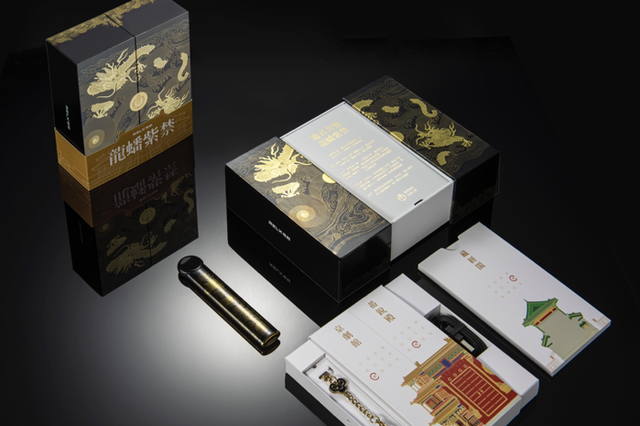

2020-06-12 11:25 投中网
今日，RELX悦刻宣布推出定制款龙蟠紫禁套装。套装内含悦刻灵点龙纹杆和玄黑鎏金祥云挂链。据介绍，此次全新设计的悦刻灵点龙纹杆，选用陶瓷机身加黄金贴花工艺，融合了传统文化元素与现代雾化科技，是对紫禁风华古韵的全新诠释，兼具古典与现代之美。
市面上很难找到以陶瓷材质打造的电子雾化杆产品。这是由于陶瓷工艺对烧结、打磨等工序要求严苛，且成本不菲。但作为独具中国特色的工艺，陶瓷明如镜、薄如纸、声如磐，其丝滑的质感不可替代。
为了赋予悦刻灵点龙纹杆厚重的文化底蕴和收藏价值，RELX悦刻历经14个版本优化，3个月打磨，才在0.5mm厚度的机身上实现陶瓷材质的通透感和温润触感。珍贵陶瓷材质，辅以玄黑鎏金色泽，使全新设计的灵点龙纹杆具备文雅之气和尊贵之风。
同时，玄色机身由暗色金线勾勒的“双龙戏珠”纹样完整覆盖。双龙游于海波之中，惊涛拍击崖壁激起金色海浪，画面排列紧凑工整，细节纤毫毕现。
“双龙戏珠”寓意愉悦、欢腾，是历史悠久的中国传统纹样，契合着RELX悦刻传达给消费者的产品体验。据该产品设计师介绍，为了让“双龙戏珠”纹样与悦刻灵点流畅的产品造型交融一体，每一根龙纹杆的黄金贴花工艺需耗费大量时间、纯手工操作完成，才能保证柔美与力度并济的视觉效果。
辅以物理气相沉淀技术，RELX悦刻还在产品表面沉淀有机氟化物材料，使灵点龙纹杆具备防水、防油、防指纹等功能。
为方便携带，套装中特意配有玄黑鎏金祥云挂链。该挂链采用仿金真空电镀工艺，质地轻盈，与悦刻灵点龙纹杆配合使用，视觉效果和谐统一。此外，由于陶瓷材质需精心呵护，RELX悦刻还将为购买龙蟠紫禁套装的用户赠送一份“RELX Care·悦享安心”会员权益。
蕴含丰富传统文化元素的同时，悦刻灵点也是一款主打智能化体验的电子雾化器产品。在体验上，不仅使用4代FEELM陶瓷雾化芯、独立设计雾化弹结构，大幅提高雾化品质和防漏油水平，而且搭载新一代BLE蓝牙芯片，可与RELX ME App配合使用，实时追踪用户使用口数、喜爱口味、渐少焦油量等6项数据。
在启动智能童锁功能后，RELX ME App还可一键锁住悦刻灵点，切断通电功能，从而防止未成年人使用。
RELX悦刻创始人、CEO汪莹表示：“我们希望向用户提供兼具世界一流品质和安全性的产品，此次推出灵点龙纹杆，既是对古人匠心精神和中华文化的致敬，也是古代智慧和现代科技的跨时空‘对话’。”